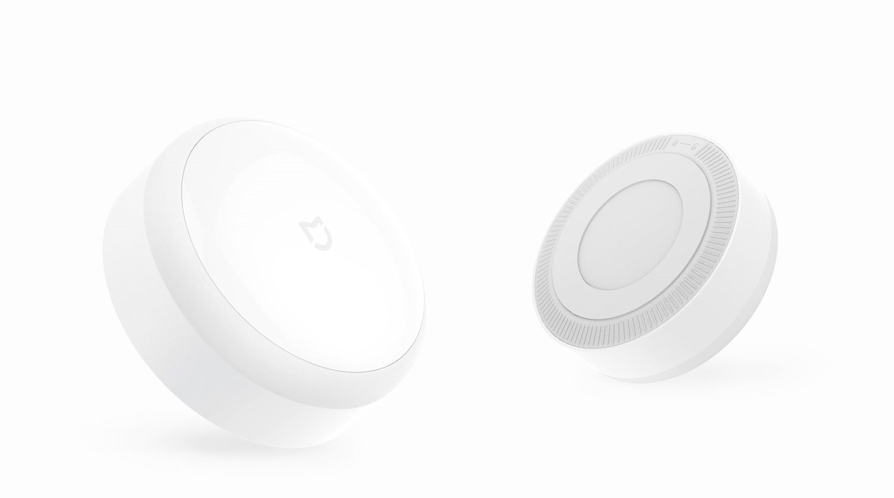
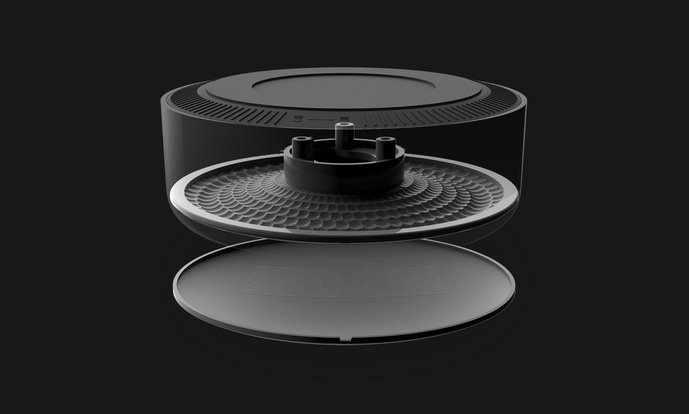
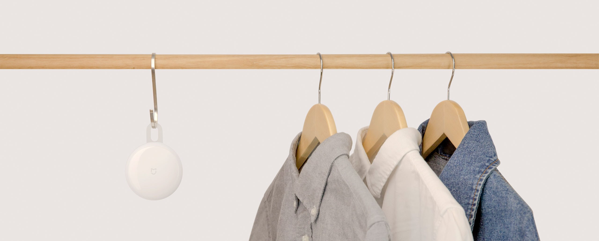
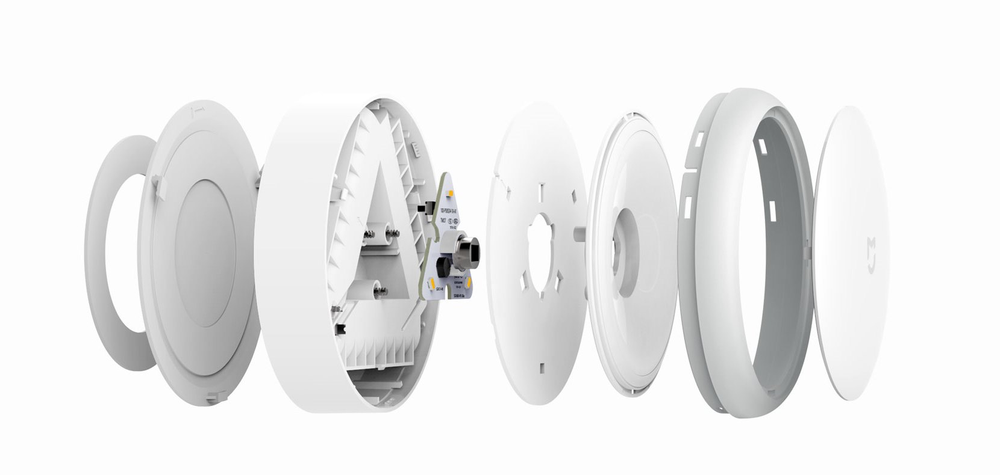

<div class="row msnl">
    <div class="col-md-10 col-md-offset-1 col-lg-8 col-lg-offset-2 content">
        <section class="row msnl_content_1">
            <div class="col-xs-12 col-sm-12 col-md-6 col-lg-6">
                <div class="text">
                    <h1>Mi Motion Sensor Night Light</h1>
                    <h2>Ночник с датчиком движения</h2>
                    <p>Два датчика | Ультранизкое энергопотребление | Два уровня освещения | Установка на любую поверхность
                    </p>
                </div>
            </div>
        </section>
        <section class="row msnl_content_2">
            <div class="col-xs-12 col-sm-12 col-md-10 col-md-offset-1 col-lg-10 col-lg-offset-1 align-center">
                <div class="text">
                    <h2>Окружите себя приятным светом</h2>
                    <p>Мы воплотили все о чем вы думали представляя себе ночной светильник. Простая установка, нет необходимости подключать
                        или прокладывать провода. Широкий диапазон чувствительности на освещение и движение обеспечивает
                        четкую работу. Ультра низкая мощность позволяет светильнику легко работать 365 ночей.</p>
                </div>
                
            </div>
        </section>
        <section class="row msnl_content_3">
            <div class="col-xs-12 col-sm-10 col-md-6 col-lg-6">
                <div class="text">
                    <h2>Сверхчувствительный датчик — ни одно движение не останется незамеченным</h2>
                    <p>Продвинутые датчики освещенности и движения автоматически включает свет на 15 секунд при каждом движении
                        в темноте. Датчик движения с углом охвата 120°, обеспечивает диапазон чувствительности 5-7 метров.</p>
                </div>
            </div>
        </section>
        <section class="row msnl_content_4">
            <div class="col-xs-12 col-sm-12 col-md-6 col-md-offset-6 col-lg-6 col-lg-offset-6">
                <div class="text">
                    <h2>Высокая энергоэффективность — 365 ночей работы</h2>
                    <p>Попрощайтесь со штепселями и сложной установкой. Сверхнизкое энергопотребление 0.25 мВт. Два режима освещения:
                        12 месяцев работы от батарей при 0.7лм, 6 месяцев использования в режиме 3.8лм</p>
                </div>
            </div>
        </section>
        <section class="row msnl_content_5">
            <div class="col-xs-12 col-sm-12 col-md-10 col-md-offset-1 col-md-offset-1 col-lg-10 col-lg-offset-1 align-center">
                <div class="text">
                    <h2>Профессиональная линза и отражатель для мягкого освещения</h2>
                    <p>Свет диодов равномерно отражается и усиливаясь рассеивается в пространстве. Ультратонкая линза Френеля
                        и диффузный отражатель позволяют получать равномерный и комфортный для глаз свет.</p>
                </div>
                
            </div>
        </section>
        <section class="row msnl_content_6">
            <div class="col-xs-12 col-sm-12 col-md-12 col-lg-12 align-center" style="padding: 0">
                <div class="text">
                    <h2>Простая и удобная установка</h2>
                    <p>Светильник может быть установлен с помощью клейкой ленты, саморезов или стильного крючка. Вы можете установить
                        Mi Motion Sensor Night Light в шкаф, на лестницу, прикроватную тумбу, гараж, или прихожую.</p>
                </div>
                
            </div>
        </section>
        <section class="row msnl_content_7">
            <div class="col-xs-12 col-sm-12 col-md-6 col-lg-6">
                <div class="text">
                    <h2>Естественный ночной свет</h2>
                    <p>Светильник рекомендован многими педиатрами для использования в детских комнатах. Лампа может светить
                        на протяжении всей ночи, давая вам достаточно освещения для ваших дел, при этом не нарушая чуткий
                        сон ребенка.</p>
                </div>
            </div>
        </section>
        <section class="row msnl_content_8">
            <div class="col-xs-12 col-sm-8 col-sm-offset-4 col-md-6 col-md-offset-6 col-lg-6 col-lg-offset-6">
                <div class="text">
                    <h2>Идеальное освещение для лестниц</h2>
                    <p>Установите лампу на лестницу и создайте максимально комфортные условия передвижения по дому в ночное время.
                        Mi Motion Sensor Night Light это отличное решение для пожилых людей и детей, которые боятся темноты.</p>
                </div>
            </div>
        </section>
        <section class="row msnl_content_9">
            <div class="col-xs-12 col-sm-12 col-md-10 col-md-offset-1 col-lg-10 col-lg-offset-1 align-center">
                <div class="text">
                    <h2>Экологически чистые материалы безопасные в использовании</h2>
                    <p>Светильник Mi Motion Sensor Night Light изготовлен без использования стекла. Только экологичные ABS пластики
                        полиэтилен высокой плотности. Эти материалы придают устройству высокую прочность, без риска что лампа
                        разобьется и нанесет вам травму. Предназначен для безопасного и долговременного использования.</p>
                </div>
                
            </div>
        </section>
        <section class="row msnl_content_10">
            <div class="col-xs-12 col-sm-12 col-md-6 col-lg-6">
                <div class="text">
                    <h2>Минималистичный дизайн для любых интерьеров</h2>
                    <p>Ночник легко вписывается в любое пространство благодаря максимально простому дизайну без лишних деталей.
                        Светильник дополнит любой интерьер своим уникальным внешним видом.</p>
                </div>
            </div>
        </section>
        <section class="row msnl_content_11">
            <div class="col-xs-12 col-sm-12 col-md-12 col-lg-12">
                <table class="table">
                    <thead>
                        <tr>
                            <th colspan="2">Характеристики</th>
                        </tr>
                    </thead>
                    <tbody>
                        <tr>
                            <td>Модель</td>
                            <td>MJYD01YL</td>
                        </tr>
                        <tr>
                            <td>Цвет</td>
                            <td>Белый</td>
                        </tr>
                        <tr>
                            <td>Размеры</td>
                            <td>84×84×36mm</td>
                        </tr>
                        <tr>
                            <td>Вес</td>
                            <td>141g</td>
                        </tr>
                        <tr>
                            <td>Светвой поток</td>
                            <td>0.7lm, 3.8lm</td>
                        </tr>
                        <tr>
                            <td>Цветовая температура</td>
                            <td>2700K</td>
                        </tr>
                        <tr>
                            <td>Датчики</td>
                            <td>Датчик освещенности, датчик движения</td>
                        </tr>
                        <tr>
                            <td>Мощность</td>
                            <td>0.25W</td>
                        </tr>
                        <tr>
                            <td>Рабочая температура</td>
                            <td>－10 — ＋40℃</td>
                        </tr>
                        <tr>
                            <td>Питание</td>
                            <td>3 x AA</td>
                        </tr>
                        <tr>
                            <td>Назначание</td>
                            <td>Для помещений</td>
                        </tr>
                    </tbody>
                </table>
            </div>
        </section><!--  -->
    </div>
</div>